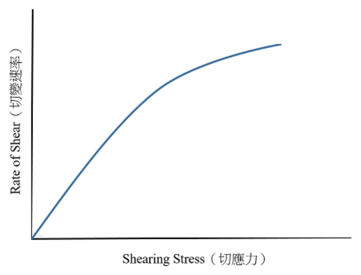
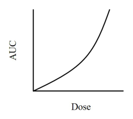

第 1 題待校
針對改善藥品安定性之策略，下列何者最不適當？
- （A）添加抗氧化劑
- （B）添加緩衝物質
- （C）添加螯合劑
- （D）劑型改為水溶液
答案：（D）
這一頁是民國 113 年第 2 次藥師藥劑學與生物藥劑學的整份歷屆試題，共 80 題，題目與標準答案出自考選部「國家考試試題及測驗式試題答案」開放資料，其中 75 題附有詳解。以下逐題列出題幹、選項與答案；要計時作答或記錄成績，請用線上練習。
考選部原始場次代碼：113090
線上作答這一科 →第 1 題待校
答案：（D）
答案：（B）
正解：反應級數先看速率是否受反應物濃度影響。速率式可寫為 v = k[A]^n；若改變濃度而速率不變，n = 0，代表零級反應，不是一級反應。因此（B）把零級反應誤稱為一級反應，故選 B。
A：溫度升高通常使速率常數 k 增大，藥物降解更快，有效期因而縮短；（A）符合加速安定性試驗的基本方向。
C：Arrhenius equation 描述 k 與絕對溫度的關係，可用不同溫度的降解資料推估安定性；（C）敘述正確。
D：藥品安定性常以零級或一級動力學處理，前者速率與濃度無關，後者則與濃度成正比；（D）是常用的分類。
本題考點：反應級數（reaction order）——先由速率對濃度的依賴性判斷，濃度不影響速率就是零級；Arrhenius equation——需要評估溫度對降解的影響時，以速率常數 k 隨溫度變化的關係判讀，而非只比較單一時間點濃度。
答案：（A）
正解：比較極性時，先看分子中是否有可形成強氫鍵的官能基。hydrogen peroxide 具有兩個 O–H 鍵與兩個氧原子，可提供並接受氫鍵，分子間作用力最強，故選 A。
B：mineral oil 主要由長鏈 hydrocarbons 組成，幾乎沒有永久偶極或氫鍵官能基；（B）屬非極性油相。
C：acetone 有極性的 carbonyl，因而比 hydrocarbons 極性高；但它不能像（A）hydrogen peroxide 一樣提供 O–H 氫鍵，整體極性較小。
D：benzene 的環狀 π 電子分布對稱，沒有可形成氫鍵的官能基；（D）為非極性溶劑。
本題考點：分子極性（molecular polarity）——比較時先核對永久偶極與氫鍵供體、受體的數量與強度；氫鍵（hydrogen bonding）——含 O–H 等可供氫鍵官能基的分子，通常比只有碳氫骨架或單一 carbonyl 的分子更親水。
答案：（D）
正解：syrup 為高濃度糖水溶液，貯存時若水分由瓶口空氣層散失，糖濃度會進一步上升並容易析出結晶；因此需要以滿置方式減少頂空與水分變化，故選 D。
A：tincture 含揮發性溶媒，確實需要緊密容器；但（A）的核心風險是揮發性溶媒損失，並非本題所問最需要滿置貯存的劑型。
B：emulsion 的穩定性主要須防止分層、聚結與不當溫度造成的破乳；（B）雖應妥善密封，滿置不是其最具決定性的貯存判準。
C：suspension 的主要貯存後問題是粒子沉降與重分散性；（C）應著重使用前振搖與避免形成硬沉降，不是以滿置作為主要辨識。
本題考點：糖漿劑（syrup）——高糖濃度製劑要防止水分散失與結晶，遇到滿置貯存的考題優先連結此特性；頂空控制（headspace control）——判斷貯存要求時，先辨別是要防蒸發、防氧化，還是防止物理性不安定。
答案：（D）
正解：布朗運動來自介質分子對微粒持續且不均勻的熱碰撞，每一瞬間的方向都會改變，沒有固定的淨移動方向；（D）無方向性正確，故選 D。
A：沿重力方向的運動是沉降現象，取決於粒徑、密度差與介質黏度；（A）不是布朗運動的特徵。
B：由高濃度往低濃度的淨移動是擴散的巨觀結果；（B）不能用來描述單一微粒隨機碰撞的方向。
C：往高滲透壓方向移動涉及半透膜兩側的滲透壓差與溶媒流動；（C）是滲透作用，不是布朗運動。
本題考點：布朗運動（Brownian motion）——看到膠體微粒受分子熱運動撞擊時，判準是隨機且無固定方向；擴散與滲透（diffusion and osmosis）——兩者可有濃度或滲透壓造成的淨通量，不能和個別粒子的隨機運動混為一談。
答案：（C）
正解：題目給的是開始形成微膠粒的濃度，即 critical micelle concentration。濃度增加為原本 1.5 倍後，0.463（w/v）× 1.5 = 0.6945（w/v），已高於 critical micelle concentration；此時新增界面活性劑主要形成微膠粒，界面已近飽和，界面張力仍為 40 dyne/cm，故選 C。
A：51 dyne/cm 是未加入界面活性劑時水與正辛烷混合液的界面張力；（A）忽略了界面活性劑已加入並達到微膠粒形成點。
B：45 dyne/cm 會把達到 critical micelle concentration 後的變化誤作仍線性下降；分辨關鍵是微膠粒開始形成後，界面張力不再隨濃度明顯下降。
D：22 dyne/cm 是正辛烷本身的表面張力，不是題目所問兩液混合後且含界面活性劑時的界面張力。
本題考點：臨界微膠濃度（critical micelle concentration, CMC）——先以題給濃度判斷是否跨過 CMC，超過後新增界面活性劑優先進入微膠粒；界面張力（interfacial tension）——界面已被吸附分子飽和時，不能把 CMC 之後的濃度增加繼續當成等比例降張力。
答案：（C）
正解：明膠是蛋白質類親水膠體，可在 oil-in-water 乳劑中作為天然乳化劑；但它不是以 HLB 值選用的低分子界面活性劑，也不適合作為助溶劑。因此（C）最不適當，故選 C。
A：明膠分散於水相時可形成保護性親水膠體膜，能協助形成 oil-in-water 型乳劑；（A）符合其乳化用途。
B：明膠由蛋白質水解衍生而來，屬蛋白質類衍生物；（B）是材料來源的正確描述。
D：明膠所形成乳劑久置後可能因凝膠結構與界面膜性質改變而液化；（D）描述的是這類乳劑的貯存性限制，並非不適當處。
本題考點：天然乳化劑（natural emulsifying agents）——親水膠體可藉界面保護膜穩定乳劑，判斷時要看其在水相的膠體行為；HLB system——HLB 值主要用於界面活性劑的選擇，不能把所有能乳化的高分子材料一概當成助溶劑。
答案：（D）
正解：天然乳化劑多為植物膠、海藻膠或其他天然親水膠體；sorbitan monopalmitate 是製備的非離子型界面活性劑，不屬天然乳化劑，故選 D。
A：acacia 為阿拉伯膠，是植物來源的天然膠體，常作為 oil-in-water 乳劑的乳化劑；（A）屬天然乳化劑。
B：tragacanth 為植物膠，能提高水相黏度並協助穩定分散系統；（B）符合天然乳化劑的分類。
C：chondrus 為海藻來源的膠質材料，可形成親水性分散相；（C）同樣屬天然來源的乳化輔助材料。
本題考點：天然乳化劑（natural emulsifying agents）——見到植物膠或海藻膠時，優先歸入天然親水膠體；非離子界面活性劑（nonionic surfactants）——sorbitan ester 類按化學製備與 HLB 特性分類，不因可乳化就成為天然乳化劑。
答案：（D）
正解：三相氣化噴霧劑的推動劑需同時符合液態比重較水小的物性條件；dimethyl ether 符合此條件，並可用作此類噴霧劑的推動劑，故選 D。
A：dichlorodifluoromethane 為鹵化液化氣體，其液態比重較水大；（A）不符合題幹的密度條件。
B：dichlorotetrafluoroethane 的液態比重亦大於水；（B）雖屬可作推動劑討論的液化氣體，仍不符合本題限定。
C：heptafluoropropane 的液態比重不小於水；分辨關鍵在題目問的是比重條件與三相系統用途的交集，而不是任一氟化推動劑。
本題考點：氣化噴霧劑推動劑（aerosol propellants）——先比對推動劑的液態比重與製劑相容性，再判定可否用於指定系統；三相氣化噴霧劑（three-phase aerosol）——有水相時，推動劑與水相的密度及分相行為是選材判準。
答案：（A）
正解：Stokes equation 可寫為 v = 2r^2(ρp−ρm)g/(9η)。沉降速率 v 與顆粒半徑 r 的平方成正比，不是只與 r 成正比；（A）漏掉平方關係，故選 A。
B：式中 g 位於分子，重力加速度愈大，沉降速率愈快；（B）符合 Stokes equation。
C：介質黏度 η 位於分母，黏度提高會增加阻力並降低沉降速率；（C）敘述正確。
D：顆粒與分散媒介的密度差 ρp−ρm 位於分子，密度差越大，重力造成的沉降驅動力越大；（D）正確。
本題考點：Stokes equation——懸液粒子沉降速率以 r^2、密度差與 g 為正比，並與黏度 η 成反比；粒徑效應（particle-size effect）——比較懸液安定性時要記得半徑是平方項，粒徑稍增即可顯著加快沉降。
答案：（D）
正解：界面活性劑濃度超過 critical micelle concentration 後，蘇丹 III 會因進入微膠粒而使吸光值呈現新的線性增加。將高濃度端直線外插至 x 軸，所得截距對應微膠粒開始形成的濃度，故可求得 critical micelle concentration，故選 D。
A：蘇丹 III 的水溶解度反映的是未受微膠粒增溶時的基線濃度；（A）不是由高濃度端直線的 x 軸截距直接取得。
B：表面超量須由界面吸附或表面張力資料分析；（B）不能由染劑吸光值對界面活性劑濃度的外插截距判得。
C：滲透壓是依溶質粒子數造成的依數性質，與此增溶曲線的交點意義不同；（C）不合量測設計。
本題考點：染劑增溶法（dye solubilization method）——選用疏水性染劑時，超過 CMC 後的吸光值上升可作為微膠粒形成訊號；臨界微膠濃度（critical micelle concentration, CMC）——讀圖時以高濃度線段外插的 x 軸截距，判定開始出現微膠粒的濃度。
答案：（D）
正解：以 acacia 採乾膠法調製固定油的初乳時，標準比例為 oil:H2O:acacia = 4:2:1；（D）依序完全相符，故選 D。
A：1:2:4 把油與膠的比例顛倒，會使 gum 的量遠高於固定油初乳所需；（A）不是乾膠法比例。
B：2:4:1 的水量相對油量過高，沒有維持固定油先以適量水與 gum 形成初乳的比例；（B）不正確。
C：4:1:2 雖保留油量為 4，但水量不足且 gum 量過多；分辨關鍵是三個數字必須依 oil、water、acacia 的順序讀取。
本題考點：乾膠法（dry-gum method）——固定油初乳先記 oil:H2O:acacia = 4:2:1，題目改變排列順序時要重新對位；初乳（primary emulsion）——先形成穩定初乳再逐步加入其餘成分，比例錯置會影響乳化劑量與乳化效果。

答案：（C）
正解：圖形以切應力（shearing stress）為橫軸、切變速率（rate of shear）為縱軸，曲線由原點出發、隨切應力增加而上升，但斜率隨切應力增加而遞減，曲線凸向切應力軸彎曲、趨於平緩，代表隨受力增加，流體的表觀黏度隨之下降，此為擬塑性（pseudoplastic）流變行為，故選 C。
A：Newtonian 流體在此圖上應呈通過原點的直線，斜率固定即黏度倒數為定值，與圖中彎曲、斜率遞減的曲線不符。
B：elastic（彈性）描述的是應力去除後形變是否可回復的性質，不是切應力與切變速率的函數關係，與此圖所繪的流變曲線型態無關。
D：dilatant（膨脹性）流體的曲線斜率隨切應力增加而遞增，凸向切變速率軸彎曲，與圖中斜率遞減的走勢方向相反。
本題考點：非牛頓流體之流變曲線判讀（rheogram interpretation for non-Newtonian fluids）——斜率隨切應力增加而遞減即為擬塑性、遞增則為膨脹性、固定則為牛頓流體；擬塑性行為的成因（shear-thinning mechanism）——高分子鏈或分散粒子隨切變力增加而沿流動方向排列，流動阻力隨之下降。
答案：（C）
正解：濕潤劑必須有足夠親水性，讓水置換固體表面的空氣並鋪展，但不需高到作為主要助溶劑；HLB 7～9 是濕潤劑的典型範圍，故選 C。
A：HLB 1～3 偏高度親油，常見用途較接近消泡或油相相關功能；（A）不足以作為水相中的濕潤劑。
B：HLB 4～6 常用於 water-in-oil 型乳化劑，親油性仍高於濕潤固體所需；（B）不在濕潤劑的典型範圍。
D：HLB 10～18 涵蓋較高親水性的 oil-in-water 乳化、清潔或助溶用途；（D）範圍過廣且偏高，不能取代專屬的濕潤劑判準。
本題考點：HLB system——依親水親油平衡值選界面活性劑，先問製劑需要的是濕潤、乳化還是助溶；濕潤劑（wetting agents）——固體難被水潤濕時，優先選 HLB 7～9 的界面活性劑以降低接觸角。
答案：（A）
正解：Polybase 為 polyethylene glycol 類的水溶性栓劑基劑，置入後以溶於體液的方式釋放藥物，因此屬可與水混溶的基劑，故選 A。
B：Suppocire OSI 為脂肪性栓劑基劑，主要在體溫下熔融而非與水混溶；（B）不符合題幹。
C：Wecobee W 屬脂肪性基劑，其藥物釋放以熔融後分配為主；（C）不是水溶性基劑。
D：Witepsol H15 亦為脂肪性硬脂基劑，遇體溫軟化或熔融；分辨關鍵在（D）與 Polybase 的釋放機制不同。
本題考點：水溶性栓劑基劑（water-soluble suppository bases）——polyethylene glycol 類以溶解於體液釋放藥物，可與脂肪性基劑區分；脂肪性栓劑基劑（oleaginous suppository bases）——Witepsol、Suppocire 與 Wecobee 類多靠熔融釋放，不應因同樣可製成栓劑而歸為水混溶。
答案：（B）
正解：甘油明膠栓劑以甘油為主要組成，明膠負責形成膠體結構，但其比例並不占總重量約一半；（B）把明膠含量說得過高，故選 B。
A：（A）所述緊密容器及 35 °C 以下貯存要求，目的在避免此類親水性基劑受熱軟化與性狀改變，符合藥典貯存原則。
C：甘油明膠基劑適合用於陰道栓劑的製備；（C）與其親水、膠體型基劑的用途相符。
D：此類栓劑使用前可先以水潤濕，藉此減少置入時的不適並利於使用；（D）為正確處置方式。
本題考點：甘油明膠栓劑（glycerinated gelatin suppositories）——辨識時以甘油為主、明膠形成結構，不能把明膠誤當成半數以上的主體；栓劑貯存（suppository storage）——親水性膠體基劑須防熱與性狀變化，遇到藥典規範時要連同容器與溫度條件核對。
本題送分，無標準答案
答案：（D）
正解：Pastille（舐錠／喉片）是含於口腔中緩慢溶解、經口腔黏膜或吞嚥作用的劑型，屬口服／口腔用途而非皮膚外用，故選 D。
A：plaster（硬膏）是塗佈於襯背材料上、直接貼附於皮膚的外用劑型，屬局部外用。
B：paste（糊劑）為含高比例固體粉末、質地較硬的半固體外用製劑，塗抹於皮膚患部，屬局部外用。
C：poultice（泥敷劑）是含水量高、敷貼於皮膚表面產生濕潤或溫熱效果的外用劑型，屬局部外用。
本題考點：局部外用劑型與口服劑型的區分——判準是給藥途徑與作用部位而非劑型的物理性質，pastille 雖外觀類似錠劑，但作用途徑是經口腔黏膜或吞嚥，不屬於皮膚外用範疇。
答案：（C）
正解：題幹同時要求可研入水性溶液、潤膚、吸收傷口滲出液及容易水洗，指向 o/w 型的水洗性乳化基劑。（C）hydrophilic ointment 可與水性藥品溶液研合、兼具潤膚性與水洗性，較適合傷口有漿液滲出時使用，故選 C。
A：white ointment 屬油脂性基劑，不易與水性溶液研合，也不容易以水洗除，無法同時符合題幹條件。
B：hydrophilic petrolatum 雖可吸收一定量水分而形成乳劑，但形成的是 w/o 型系統，仍不具題幹所需的容易水洗特性。
D：polyethylene glycol ointment 雖可水洗且與水相容，但缺乏油相的潤膚性，並可能因吸水性使傷口感到刺激，非本題最適合的基劑。
本題考點：軟膏基劑選擇（ointment base selection）——同時出現水洗、可納入水性溶液與吸收滲出液時，優先判為水洗性 o/w 基劑；吸收性基劑（absorption bases）——能吸收水分不等於容易水洗，形成 w/o 系統時仍要與水洗性基劑區分。
答案：（C）
正解：本題問錯誤敘述，分辨重點是兩種促進劑達效所需濃度的相對高低。（C）把 Azone 與 DMSO 的常用促進穿透濃度關係倒置；Azone 一般以較低濃度即可發揮作用，DMSO 所用濃度反而較高，故選 C。
A：Azone 為脂溶性促進劑而不溶於水，DMSO 可與水互溶，這個溶解性對照正確，故非答案。
B：Azone 與 DMSO 都會改變角質層屏障性質，降低藥物穿越角質層時的擴散阻力；作用細節不同，但此概括敘述正確，故非答案。
D：單次施用後，脂溶性的 Azone 在角質層中存留時間通常較 DMSO 長，故此敘述正確而非答案。
本題考點：穿皮吸收促進劑（percutaneous absorption enhancers）——比較促進劑時，同時看水溶性、角質層作用與所需濃度，不要只以是否能增進穿透作判別；角質層屏障（stratum corneum barrier）——凡能改變角質層脂質或其擴散阻力的處置，都可能增加經皮通量。
答案：（A）
正解：判準是 Hydrophilic Petrolatum USP 本身為無水的吸收性基劑，組成以油性成分為主，製備時須先熔融混合。（A）先將油相加熱融化的敘述正確，故選 A。
B：hydrophilic petrolatum 可與水溶液研合，但會形成 w/o 乳劑，不是題述的 o/w 乳劑；分辨關鍵在連續相仍為油相。
C：此基劑本身不含水分，正可避免水分對敏感藥物造成的影響，不能因其可吸收水分就誤認為原本含水。
D：propylene glycol 是另一類水洗性軟膏基劑常見的保濕或共溶媒成分，不是 Hydrophilic Petrolatum USP 的組成特徵。
本題考點：親水軟石蠟（Hydrophilic Petrolatum USP）——看到無水吸收性基劑時，先判斷其油相需加熱熔融；乳劑型態（w/o emulsion）——可納入水溶液的吸收性基劑仍以油相為連續相，不能與 o/w 水洗性基劑混同。
答案：（D）
正解：聚乙二醇軟膏混入藥品水溶液後，基劑會因液體增加而變軟，需要加入能提供結構強度的固體成分。（D）stearyl alcohol 為固體脂肪醇，可增加軟膏的稠度與硬度，故選 D。
A：liquid paraffin 是液態油性成分，加入後傾向降低稠度，不能用來補強聚乙二醇軟膏的硬度。
B：polyethylene glycol 400 為低分子量、液態的 polyethylene glycol，常使基劑較柔軟，方向與增加硬度相反。
C：propylene glycol 主要作為保濕劑或共溶媒，具有塑化傾向，並非提高此軟膏硬度的適當成分。
本題考點：軟膏稠度調整（ointment consistency adjustment）——水性溶液使基劑變軟時，選能形成結構的固體成分補強；脂肪醇（fatty alcohol）——在半固體製劑中可增加黏稠度或硬度，須與液態油及低分子量溶媒區分。
答案：（D）
正解：乾粉吸入劑要讓藥物沉積於下呼吸道，粒徑必須兼顧吸入時的氣流攜帶與肺部沉積。（D）1-6 μm 的粒徑最適合形成可吸入分率，故選 D。
A：小於 1 μm 的粒子過小，容易隨呼氣氣流排出，肺部沉積效率反而不理想。
B：大於 15 μm 的粒子慣性撞擊明顯，多沉積在口咽部，難以到達下呼吸道。
C：7-15 μm 的粒子仍偏大，較容易停留於上呼吸道；看似已是微粒，但可吸入性不是只看是否小於肉眼可見尺度。
本題考點：可吸入粒徑（respirable particle size）——目標在下呼吸道沉積時，優先選約數微米的粒子；慣性撞擊（inertial impaction）——粒徑過大時先撞擊口咽與大氣道，粒徑過小則可能隨呼氣離開。
答案：（B）
正解：hammer mills 的辨識線索是高速旋轉的槌或葉片以撞擊方式粉碎，並由篩網決定可通過的粒徑。（B）完整描述了撞擊與篩網分級兩個特徵，故選 B。
A：高速氣流使粒子互相碰撞的機制屬於流能磨（fluid energy mill），不是 hammer mill。
C：以不鏽鋼球摩擦、撞擊並配合震盪的裝置是球磨（ball mill）的工作原理。
D：旋轉軸上刀片的主要作用是剪切，這是 cutter mill 的特徵，而非以槌擊為主的 hammer mill。
本題考點：槌式粉碎機（hammer mill）——看到高速槌擊加上篩網控制粒徑時即可判定；粉碎機制（size-reduction mechanisms）——氣流碰撞、球磨摩擦撞擊與刀片剪切各對應不同設備，須以主要施力方式區分。
答案：（D）
正解：punch method 是以空膠囊本體反覆壓入已混勻的粉床取藥，適合現場少量充填且可壓實的粉末。（D）粉末性藥品最能形成均一粉床並被膠囊帶入，故選 D。
A：懸浮性藥品含液體分散系統，無法作為可反覆壓入的乾燥粉床，不適用 punch method。
B：顆粒性藥品的顆粒較大且填充行為與細粉不同，少量充填較適合依體積或重量控制，不是此法的典型適用對象。
C：油溶性藥品若呈油狀或需先溶於油性載體，不能以壓入粉床的方式充填。
本題考點：膠囊 punch method——小量調製時以膠囊殼壓入混勻粉末取藥，前提是製劑可形成乾燥均一粉床；膠囊充填（capsule filling）——先依物料是粉末、顆粒或液體選法，不能只依藥物溶解性判斷。
答案：（B）
正解：發泡顆粒劑的乾法又稱 fusion method，利用含結晶水檸檬酸經適度加熱釋出水分，使混合粉末形成可製粒的軟塊。（B）乾法需經適當加熱的敘述正確，故選 B。
A：乾法不是以酒精作黏合劑，而濕法也必須避免直接用水使酸鹼成分過早反應；水會破壞發泡系統的穩定性。
C：乾法所利用的是含結晶水檸檬酸及其加熱釋出的水分，不是無水檸檬酸；此敘述把兩種型態的角色倒置。
D：顆粒確實需要防潮密封保存，但兩法都一概以 65°C 烘乾並不恰當；乾燥條件須避免引發發泡反應或造成成分不穩定。
本題考點：發泡顆粒劑乾法（fusion method）——看到含結晶水檸檬酸與加熱形成軟塊時即可判定；防潮製劑（moisture-sensitive preparations）——酸鹼發泡成分遇水會提早反應，製備與儲存都要避濕。
答案：（B）
正解：直接加壓打錠須同時保有粉體流動性與壓縮時的粒子接觸面積，細粉比例不能過低或過高。（B）10-20% 能提供填補粒間空隙與增加結合的效果，又不致過度破壞流動性，故選 B。
A：5-10% 的細粉比例偏低，對填補空隙與改善壓縮結合的助益不足。
C：20-30% 的細粉偏多，容易使粉體流動及模孔充填變差，增加錠重不均的風險。
D：30-40% 的細粉比例更高，粉末的黏聚與流動不良問題會更明顯，並非直接加壓的適當範圍。
本題考點：直接加壓打錠（direct compression）——細粉量要在壓縮結合與流動充填間取平衡；粉體流動性（powder flowability）——細粉比例過高時易黏聚且模孔充填不穩，看到錠重變異時應回看此因素。
答案：（B）
正解：題幹同時提到機械應力、碎屑與表面磨耗，所測的是錠劑在翻滾碰撞中是否容易磨損。（B）脆度試驗以重量損失及外觀損傷評估這類耐受性，故選 B。
A：崩散度測試觀察錠劑在規定介質中是否於時間內崩解，並不評估表面磨耗。
C：應力試驗只是泛稱，不能特指錠劑碎屑與表面磨耗所用的標準品質試驗。
D：破碎力測試測量錠劑受到單向壓力時的斷裂強度，與反覆翻滾造成的脆裂及磨耗不同；兩者都與機械性質有關，分辨關鍵在施力型態。
本題考點：脆度試驗（friability test）——題幹出現碎屑、磨耗或翻滾撞擊時，選擇評估脆度的試驗；破碎力（breaking force）——用於單次壓碎強度，不可替代反覆摩擦磨耗的測量。
答案：（A）
正解：錠劑硬度取決於壓縮階段的施壓與壓實程度，在題列裝置中由上沖頭直接施加並調整該壓縮作用。（A）upper punch 最適合用來調整錠劑硬度，故選 A。
B：lower punch 主要影響模孔的填充深度與錠劑重量，雖與打錠幾何有關，但不是調整硬度的首要裝置。
C：die 決定錠劑的外形與直徑，並提供壓縮空間，不負責調整壓縮力。
D：feed shoe 的功能是將粉末送入模孔，影響充填供料而非壓縮後的錠劑硬度。
本題考點：打錠壓縮（tablet compression）——要改硬度時看壓縮壓力與上沖頭設定；模孔填充（die filling）——要改錠重時優先檢視下沖頭填充深度與 feed shoe，不要與硬度調整混為一談。
答案：（C）
正解：頂裂（capping）常與粉體內殘留空氣及壓縮後結合不足有關，改善方向是讓充填與排氣較穩定。（C）減低入料速度可減少快速充填造成的空氣夾帶，較有助於改善頂裂，故選 C。
A：添加細粉可能增加粉體黏聚與夾帶空氣的機會，未必能改善頂裂，方向並不適當。
B：崩散劑主要使錠劑給藥後崩解，不是針對壓縮時帽狀剝離的直接改善措施。
D：加快打錠速度會縮短粉體排氣與重新排列的時間，反而可能加重頂裂；看似提高產能，卻與此缺陷的改善方向相反。
本題考點：頂裂（capping）——錠劑上下表面剝離時，先從夾帶空氣、壓縮速度與粒子結合檢討；打錠缺陷（tablet defects）——製程速度的調整須連結粉體排氣時間判斷，不能只看產能。
答案：（D）
正解：本題問錯誤敘述；簡單型共融混合物的液化來自混合後熔點降低，而非分子間吸引力越強越容易發生。（D）強分子間吸引力通常有利於穩定晶格、抵抗熔化，不能說液化現象較常發生於此類化合物，故選 D。
A：若共融組成的熔點低於室溫，A、B 混合後確實可能在常溫呈液化狀態，故此敘述正確而非答案。
B：改變 A、B 的混合比例會改變相圖中的液相線與熔融行為，因此會影響 A 所呈現的熔點下降情形，故非答案。
C：加入第三種物質可改變成分接觸或吸附已形成的共融液，因而可能延緩液化，此敘述正確而非答案。
本題考點：簡單型共融物（simple eutectic mixture）——混合後若熔點降低至使用或儲存溫度以下，就要預期液化風險；晶格穩定性（crystal lattice stability）——判斷熔化傾向時，分子間作用力弱、晶格較不穩的系統較容易出現熔點下降。
答案：（D）
正解：硬膠囊內容物需要在接觸體液後迅速鬆散，題目要找的是不具崩散作用的賦形劑。（D）stearic acid 主要作為疏水性潤滑劑，不是崩散劑，故選 D。
A：pregelatinized starch 在膠囊配方中可協助吸水與鬆散，具有崩散相關用途，故非答案。
B：croscarmellose 吸水後迅速膨潤，是常用的超崩散劑，明確具有崩散作用。
C：sodium starch glycolate 也以膨潤促進內容物崩散，屬常用崩散劑。
本題考點：硬膠囊賦形劑（hard-capsule excipients）——判斷崩散劑時看吸水、膨潤或促進內容物鬆散的功能；潤滑劑（lubricants）——如 stearic acid 的主責是減少製程摩擦，疏水性反而可能拖慢潤濕。
答案：（C）
正解：製備抗毒素或治療蛇毒的免疫血清，需要可經免疫後採得大量血清的動物。（C）馬體型大、可取得的血清量多，長期是抗毒素免疫血清的常用來源，故選 C。
A：豬不是抗蛇毒免疫血清的常規製備動物，無法取代馬作為此類血清來源。
B：牛雖體型大，但在此用途的標準製備上並非通常選用的動物。
D：小鼠適合研究或小量抗體實驗，能取得的血清量太少，不適合作為臨床抗毒素的大量來源。
本題考點：免疫血清（immune sera）——需要大量多株抗體血清時，先看動物能否安全且持續提供足夠血清量；抗毒素（antivenom）——由免疫大型動物取得血清後再純化製備，不能與實驗室小鼠抗體用途混同。
答案：（B）
正解：能同時降低副作用並增強有效性的關鍵，是改善抗原的遞送位置與呈現方式。（B）微脂體遞送可包覆抗原、改善其分布與被免疫細胞攝取，因而有機會降低非目標暴露並增強免疫反應，故選 B。
A：併用不同廠牌疫苗不是改善單一疫苗遞送或安全性的通用方法，不能據此推論副作用降低或效果增加。
C：佐劑可增強免疫反應，但也可能增加局部或全身反應；不能把「卡介苗使用之佐劑」一概視為同時降低副作用與提高有效性的策略。
D：使用前加熱回溫可能影響疫苗安定性，並非用來提升免疫效果或降低副作用的製劑設計。
本題考點：微脂體遞送（liposomal delivery）——欲同時改善效力與耐受性時，看是否能把抗原導向適當細胞並減少非目標分布；疫苗佐劑（vaccine adjuvants）——佐劑提升免疫原性不必然等於副作用更低，須分開判斷。
答案：（C）
正解：此題可由單株抗體舊式命名中表示來源的字根判斷。（C）bevacizumab 的 -zumab 表示 humanized 單株抗體，故選 C。
A：basiliximab 的 -ximab 表示 chimeric 單株抗體，含有人類與非人類來源序列的嵌合特徵。
B：ibritumomab 的 -momab 表示 murine 單株抗體，不屬 humanized 類別。
D：adalimumab 字尾 -umab 中的 -u- 表示 fully human 單株抗體，-mab 則是單株抗體的通用結尾；它看似與 humanized 都有人類來源，但 humanized 與 fully human 在非人類序列保留程度不同。
本題考點：單株抗體命名（monoclonal antibody nomenclature）——辨別既有抗體來源時，以來源字根 -xi-（chimeric）、-zu-（humanized）、-u-（human）、-o-（murine）搭配通用結尾 -mab 作快速判斷；人源化抗體（humanized antibody）——保留部分非人類的抗原結合區，須與 fully human antibody 區分。
答案：（B）
正解：靜脈注射直接進入血管，對多次穿刺或重複使用造成的微生物污染容忍度最低；題目所考的製劑包裝要求因此採單劑量設計。（B）靜脈注射劑必須為單劑量包裝，故選 B。
A：肌肉注射劑可依製劑設計採單劑量或多劑量包裝，給藥途徑本身不構成一律單劑量的條件。
C：皮下注射劑也可見多劑量設計，不能只因屬注射劑就判為必須單劑量。
D：皮內注射雖投與量小，但途徑本身不是本題所列的單劑量包裝必要條件。
本題考點：注射劑包裝（parenteral packaging）——判斷單劑量要求時，先看給藥途徑與重複使用造成的污染風險；靜脈注射（intravenous injection）——因直接進入血管，包裝安全性須與其他非靜脈途徑分別判讀。
答案：（B）
正解：Water for Injection 的核心品質要求是控制熱原，特別是細菌內毒素，並且不得含有外加成分。（B）必須無熱原的敘述正確，故選 B。
A：Water for Injection 與已完成滅菌包裝的 Sterile Water for Injection 不同，前者本身不以「必須無菌」作為此題的必要條件。
C：注射用水不得添加抑菌劑；若需抑菌作用，應由最終注射製劑的配方與用途另行判定。
D：等滲劑可為最終注射製劑的配方成分，但不是 Water for Injection 可添加的成分。
本題考點：注射用水（Water for Injection）——看到原料用水時，先抓無熱原與無外加成分，不要與最終成品混同；無菌注射用水（Sterile Water for Injection）——判斷時要區分原料水與已滅菌、已包裝的給藥用水。
答案：（B）
正解：飽和蒸氣的濕熱會使微生物蛋白質變性；題幹所列 121.5℃、20 分鐘是可設定的高壓蒸氣滅菌條件，故選 B。
A：使微生物細胞脫水是乾熱滅菌較主要的致死途徑之一。steam sterilization 的蒸氣在物品表面凝結並釋放熱量，主要造成蛋白質變性，不是靠脫水。
C：petrolatum 是石油類疏水性基質，蒸氣不易有效穿透，通常不適合作為高壓蒸氣滅菌的對象；耐熱的油性製品較適合以乾熱處理。
D：壓力提高會使飽和蒸氣的溫度提高，微生物較快被滅活，所以達到同一滅菌效果所需的暴露時間應縮短，不會更長。
本題考點：高壓蒸氣滅菌（steam sterilization）——遇到飽和蒸氣時，判斷主要機制為濕熱造成蛋白質變性；乾熱滅菌（dry heat sterilization）——耐熱油性或不耐濕物品優先考慮乾熱，並以氧化與脫水方向辨析；滅菌條件互換——蒸氣溫度因壓力上升而提高時，達效所需時間往相反方向下降。
答案：（D）
正解：家兔熱原試驗的個別判讀以體溫是否升高達 0.5℃ 為關鍵門檻；依題目所指藥典規定，沒有任何家兔達到此升溫界線時，檢品可視為無熱原，故選 D。
A：檢品的體重劑量不是每公斤 1 mL。劑量過低會使試驗的熱原挑戰量不足，不能依此作為藥典規定的執行條件。
B：家兔耳靜脈注射有較短的規定完成時間，不能以不得超過 20 分鐘概括。注射過久會使體溫反應的觀察起點不一致。
C：注射後應在規定的觀察時段內以固定間隔測量體溫，並非從第 1 小時一路記錄至第 5 小時的程序。
本題考點：家兔熱原試驗（rabbit pyrogen test）——先看每隻家兔的體溫變化是否跨過個別門檻，再依規定做整體判讀；熱原（pyrogen）——判讀的是注射後的體溫反應，給藥劑量、注射時間與量測時程都必須固定。
答案：（B）
正解：乾熱滅菌的主要致死作用是氧化反應，不是把細菌蛋白質還原；因此（B）敘述錯誤。惟（C）所列 B. subtilis 並非高壓蒸氣滅菌的標準 biological indicator，該法通常配對 Geobacillus stearothermophilus，故（C）依題面同樣是錯誤敘述，本題實際存在（B）、（C）雙重錯項，官方鍵與題面並不相容。官方答案為 B；本詳解依其可確定的機制錯誤判定，故選 B。
A：高壓蒸氣以濕熱使細菌蛋白質凝固、變性，這正是其主要滅菌機制，因此不是本題所問的錯誤敘述。
C：高壓蒸氣滅菌的耐熱芽孢指標，依現行常用命名為 Geobacillus stearothermophilus，（C）寫成 B. subtilis 與現行標準不符，依題面應屬錯誤敘述。題目官方鍵只列 B 為錯誤，此處的菌種錯置屬題目缺陷，宜送回命題複核，不能當成可成立的非答案。
D：B. atrophaeus 的芽孢耐受乾熱，常用於驗證乾熱滅菌程序，因此此敘述可成立。
本題考點：乾熱滅菌（dry heat sterilization）——判斷致死機制時看氧化與脫水方向，不是還原反應；高壓蒸氣滅菌（steam sterilization）——濕熱的核心是蛋白質變性；生物指標（biological indicator）——見到指標菌種時須同時核對滅菌法與菌種的現行命名。
答案：（D）
正解：眼用溶液可加入 methylcellulose 增加黏度，延長藥物停留在眼表的時間，因而提高與眼部組織接觸的機會，故選 D。
A：眼用軟膏必須以無菌藥品在嚴格無菌操作下製備，但多劑量製劑是否加入適當抑菌劑要看處方與規格，不能絕對說不得添加。
B：眼用軟膏的金屬粒子檢查有粒徑及粒子數的規格，不能只以 150 μm 以上粒子作為題述的唯一計數標準。
C：淚液的生理 pH 約為 7.4，但眼用溶液還須兼顧藥物穩定性與緩衝能力，市售產品不會全部強制調成相同 pH。
本題考點：眼用溶液黏度調整（viscosity enhancement）——需要延長眼表接觸時間時，可用適當增稠劑降低淚液沖洗造成的流失；眼用製劑無菌性（ophthalmic sterility）——無菌製備與是否需加入抑菌劑是兩個不同判斷層次；眼部耐受性（ocular tolerability）——pH 要在舒適性與藥物穩定性間取平衡，不是機械地固定為淚液 pH。
答案：（C）
正解：綠膿桿菌對眼用製劑防腐系統是重要的挑戰菌。phenylmercuric acetate 對其效果有限，而 sodium metabisulfite 的主要角色是抗氧化劑，不能補足抗綠膿桿菌活性，因此（C）防腐效果不佳，故選 C。
A：benzalkonium chloride 搭配 polymyxin B sulfate 時，後者對多種革蘭陰性菌具有活性，可補強對綠膿桿菌的防腐效果。
B：chlorobutanol 與 phenylethyl alcohol 都可提供抑菌作用；此組合不是以單純抗氧化作用取代防腐，故不屬本題所問的效果不佳者。
D：disodium ethylenediaminetetraacetate 可螯合二價陽離子並增加革蘭陰性菌外膜通透性，能增強 benzalkonium chloride 對綠膿桿菌的效果。
本題考點：眼用製劑防腐（ophthalmic preservation）——評估防腐系統時要看其對 Pseudomonas aeruginosa 的覆蓋，而非只看是否含防腐劑；增效劑（preservative potentiator）——EDTA 螯合金屬離子後可提升某些陽離子型防腐劑對革蘭陰性菌的效力；抗氧化劑（antioxidant）——sodium metabisulfite 用於降低氧化，不可當成抗綠膿桿菌防腐劑。
答案：（C）
正解：非揮發性溶質增加時，溶液的沸點應上升而非下降；因此（C）把沸點變化方向說反，故選 C。
A：溶質粒子增加會降低溶媒逸出的機率，所以蒸氣壓下降幅度增加，這是正確的依數性變化。
B：溶質使液相化學勢降低，凝固時必須降到更低溫度，故冰點下降幅度會增加。
D：滲透壓與溶液中有效溶質粒子濃度成正比；溶質增加時，滲透壓上升較多。
本題考點：依數性（colligative properties）——只要溶質粒子數增加，就依序判斷蒸氣壓下降、冰點下降、沸點上升與滲透壓上升；沸點上升（boiling-point elevation）——題目問溶質添加後的方向時，看到沸點下降應立即排除。
答案：（C）
正解：供補充體液、營養或電解質用的大體積注射液不得加入抗微生物防腐劑；benzalkonium chloride 是防腐劑，故不可用於此類 large volume injections，故選 C。
A：phosphoric acid salts 可作為配方中的酸鹼調整或電解質相關成分，並非因其本質而被此題的大體積注射液規範排除。
B：sodium metabisulfite 的主要用途是抗氧化；在配方確有必要時，不能因其不是防腐劑就與 benzalkonium chloride 同樣排除。
D：ethylenediaminetetraacetic acid 為螯合劑，可用於減少金屬離子催化的變質；它不屬本題所禁的抗微生物防腐劑。
本題考點：大體積注射液（large volume injections）——看到補充體液、營養或電解質的用途時，先排除抗微生物防腐劑；防腐劑與抗氧化劑——兩者都可保護製劑品質，但前者抑制微生物、後者抑制氧化，法規限制不可混為一談。
答案：（B）
正解：細菌性熱原主要來自革蘭陰性菌外膜的 lipopolysaccharides，其中 lipid A 是引發熱原反應的重要結構，故選 B。
A：endonucleases 是切割核酸的酵素，並非革蘭陰性菌 endotoxin 的主要化學成分。
C：phospholipids 雖也是細胞膜脂質，但熱原性 endotoxin 的典型結構是 lipopolysaccharides，不可只用一般磷脂質代替。
D：toxoids 是經去毒處理而保留抗原性的毒素製劑，用於誘發免疫反應，並不是細菌熱原的來源。
本題考點：細菌內毒素（endotoxin）——遇到革蘭陰性菌熱原時，優先鎖定 lipopolysaccharides 與其 lipid A 部分；熱原（pyrogen）——分辨熱原與一般脂質或去毒類毒素時，要看是否為細菌外膜 endotoxin 的結構。
答案：（A）
正解：dexlansoprazole 在酸性環境不穩定，題幹又明示膠囊內混合兩種 pH-dependent 溶解特性的顆粒，符合以不同腸溶包衣圓粒分段釋放的 coated beads、enteric-coated capsules，故選 A。
B：ion-exchange resin system 依藥物與樹脂的離子交換釋放，題幹沒有樹脂或反離子線索；兩種 pH-dependent 顆粒也不是其典型設計。
C：microencapsulated drug 只表示以微囊包覆藥物，不能由題幹直接推得。分辨關鍵在兩種具不同腸溶特性的圓粒，而非泛稱為 delayed-release capsules。
D：osmotic pump system 應有半透膜、滲透壓驅動與釋放孔等構造線索；題幹描述的是包衣顆粒的 pH 溶解差異，並非滲透壓幫浦。
本題考點：腸溶包衣（enteric coating）——酸不穩定藥物遇到不同 pH 溶解的包衣顆粒時，判為避開胃酸後再釋放；包覆性圓粒（coated beads）——同一膠囊混合不同包衣厚度或溶解 pH 的圓粒，可形成分段釋放；滲透壓控釋（osmotic pump）——只有看到半透膜與滲透壓驅動構造時才判定此系統。
答案：（C）
正解：包覆性圓粒要靠低水溶性、可形成擴散障壁的包衣來延緩藥物釋放。hydroxypropyl methylcellulose 易水合、可溶，較不適合單獨作為此種緩釋包衣，故選 C。
A：beeswax 為疏水性蠟質，可形成阻礙水分進入與藥物擴散的屏障，能用於延緩釋放。
B：glyceryl monostearate 是脂質性材料，可藉疏水性降低釋放速率，與包衣圓粒的緩釋設計相容。
D：ethylcellulose 為水不溶性聚合物，是常見的緩釋膜材，可藉膜厚或孔隙度調整釋放。
本題考點：包覆性圓粒緩釋（coated beads sustained release）——選包衣材料時先看其是否能維持低水溶性的擴散障壁；親水性聚合物（hydrophilic polymer）——HPMC 易水合或溶解，較適合作為基質或成膜輔助材料，不宜直接當作單一緩釋障壁。
答案：（B）
正解：離子交換輸藥系統的釋放，取決於樹脂上的藥物與腸胃道反離子進行交換的過程，不是通常由藥物溶解度單獨決定；因此（B）敘述錯誤，故選 B。
A：半衰期約 4～6 小時的藥物通常仍有製成口服控釋劑型的價值，可降低給藥頻率且不至於因半衰期過長而累積過度。
C：osmotic pump 的水分進入與藥物推出主要由滲透壓差及半透膜控制，通常不受腸胃道媒液 pH 值顯著影響，因此此敘述正確。
D：microencapsulation 可改變包衣相對於核心的重量比或膜厚，進而調整擴散路徑與藥物釋放速率，此敘述正確。
本題考點：離子交換樹脂輸藥（ion-exchange resin system）——看到樹脂載藥時，以反離子交換與介質離子強度判斷釋放，不要直接套用溶解度控制；滲透壓控釋（osmotic pump）——判斷重點是半透膜與滲透壓驅動，通常可降低 pH 對釋放的影響；微囊包覆（microencapsulation）——包衣與核心比例改變膜障壁時，可用來調控擴散釋放。
答案：（A）
正解：連續口服給藥的累積過程同時受到吸收與排除兩個速率過程影響，因此累積半衰期與吸收速率常數 ka、排除速率常數 k 最相關，故選 A。
B：D0 改變的是每次給入的總量，不會改變吸收或排除的速率常數；只列 D0 與 k 會漏掉口服吸收過程。
C：DL 是負荷劑量，t 是時間變數，兩者都不是描述吸收或排除快慢的速率常數，不能決定累積半衰期。
D：Vd 可透過 CL / Vd 與 k 有關，但在 k 已知時，Vd 不是口服多劑量累積的另一個直接速率參數；此組合也缺少 ka。
本題考點：累積半衰期（accumulation half-life）——多次口服給藥時，先同時辨認吸收 ka 與排除 k，兩者共同決定濃度接近穩定狀態的型態；速率常數與劑量——改變 D0 或 DL 會改變濃度量級，不會直接改變一階吸收或排除的速度。
答案：（D）
正解：一室模式恆速輸注先由穩定狀態求總清除率，再由 14 h 的達穩比例求 k。CL = Rin / Css = 400 mg/h / 20 mg/L = 20 L/h。C14 = Css × (1 - e^-kt)，故 15 mg/L = 20 mg/L × (1 - e^-14k)，e^-14k = 0.25，k = ln 4 / 14 h = 0.099 h^-1。最後 Vd = CL / k = 20 L/h / 0.099 h^-1 = 202 L，約為 200 L，故選 D。
A：20 是由 Rin / Css 得到的總清除率數值，但其單位為 L/h，不是分布體積的 L；把 CL 直接當 Vd 少了以 k 換算的一步。
B：40 L 只是把清除率數值任意倍增，沒有使用 14 h 濃度所提供的 k，因此不符合 Vd = CL / k。
C：100 L 可由 fe = 0.5 先把總清除率錯換成腎清除率 10 L/h 再除以 k 得到；濃度時間曲線的 k 是總排除速率常數，應配合總 CL 20 L/h 計算。
本題考點：恆速輸注穩定狀態（constant-rate infusion）——先用 Css = Rin / CL 由目標濃度求總清除率；一室輸注達穩曲線——以 C(t) / Css = 1 - e^-kt 從任一時間點反推 k；分布體積（volume of distribution）——k 與 CL 已知時，固定用 Vd = CL / k，且總 k 要配總 CL。
答案：（C）
正解：由承上題可得清除率 CL = R0/Css = 400 mg/h ÷ 20 mg/L = 20 L/h，分布體積 Vd = CL/ke = 20 L/h ÷ 0.1 h⁻¹ = 200 L。欲維持新的穩定狀態濃度 30 mg/L，新的恆速輸注速率為 Rin = Css,new × CL = 30 mg/L × 20 L/h = 600 mg/h；由於病人已在 20 mg/L 的穩定狀態，只需針對濃度差額補充負荷劑量：DL = (Css,new − Css,old) × Vd = (30 − 20) mg/L × 200 L = 2,000 mg。兩者搭配即為 DL：2,000、Rin：600，故選 C。
A：DL：600、Rin：1,200，Rin 遠高於維持 30 mg/L 所需的 600 mg/h，若真的以 1,200 mg/h 輸注，最終穩定狀態濃度將遠超過 30 mg/L，超出目標。
B：DL：1,200、Rin：900，兩個數值都對應不到本題的目標濃度與既有濃度差額，不符合上述計算。
D：DL：3,000、Rin：500，負荷劑量遠超過補足 10 mg/L 濃度差額所需的 2,000 mg，且 Rin 500 mg/h 維持的穩定狀態濃度僅 25 mg/L，達不到 30 mg/L 的目標。
本題考點：由既有穩定狀態調整至新目標濃度的給藥設計——新輸注速率取決於目標濃度與清除率，補充負荷劑量只需涵蓋濃度差額乘以分布體積，不是從零開始的完整負荷劑量。
答案：（C）
正解：ka 不變而 k 增加時，總清除能力增加，AUC 會下降，Cmax 也會下降。另一方面 tmax = ln(ka / k) / (ka - k)，式中含有 k，所以不會保持不變；成立的是①③，故選 C。
A：僅列②④不但漏掉 AUC 與 Cmax 都會下降，還把 tmax、Cmax 說成不變，與一階口服吸收模型不符。
B：①正確，但②忽略 tmax 公式中的 k，④則把 Cmax 說成不變；排除變快時，峰值會降低。
D：①③雖正確，②仍錯在把 tmax 視為與 k 無關。分辨關鍵在 tmax 同時受 ka 與 k 影響，不是只由 ka 決定。
本題考點：口服一室模型（one-compartment oral model）——ka 固定而 k 變大時，以更快排除判斷 AUC 與 Cmax 下降；最高濃度時間（tmax）——需要比較 ka 與 k 時，代入 tmax = ln(ka / k) / (ka - k)，不可只看吸收速率常數；曲線下面積（AUC）——在 F、D、Vd 不變的前提下，k 增加代表清除增加，AUC 下降。
答案：（D）
正解：無 flip-flop 現象時，雙指數式中較小的指數係數代表排除速率常數 k。由 C = 45(e^-0.17t - e^-1.5t) 可得 k = 0.17 h^-1，故 t½ = ln 2 / k = 0.693 / 0.17 h^-1 = 4.08 h，約為 4 h，故選 D。
A：0.5 h 接近以 ka = 1.5 h^-1 計算的吸收半衰期；題幹已排除 flip-flop，不能把較快的吸收相誤作排除相。
B：1 h 不符合 ln 2 / 0.17 h^-1 的計算結果，也不是另一個指數係數所對應的半衰期。
C：2 h 同樣不由兩個速率常數的半衰期公式導出；判斷終端半衰期時必須使用較小的 0.17 h^-1。
本題考點：終端半衰期（terminal half-life）——在無 flip-flop 時，雙指數式中較小的速率常數就是 k，代入 t½ = ln 2 / k；flip-flop kinetics——只有吸收比排除慢時才可能把終端相誤認為 ka，本題明示無此現象即可排除。
答案：（A）
正解：由於藥品吸收快速且不具 flip-flop 現象，方程式 C = 45(e^-0.17t − e^-1.5t) 中較大的速率常數 1.5 h⁻¹ 對應吸收速率常數 ka，較小的 0.17 h⁻¹ 對應排除速率常數 ke（與承上題求得的半衰期 4 小時一致）。口服單室模式的係數為 C0 = F·D·ka / [Vd·(ka−ke)]，代入 F = 0.8、D = 100 mg、ka = 1.5、ke = 0.17:45 = (0.8×100×1.5) / [Vd×(1.5−0.17)] = 120 / (Vd×1.33)，解得 Vd = 120 / (45×1.33) ≈ 2.0 L，故選 A。
B：2.5 L 若代入驗算，120 ÷ (2.5×1.33) ≈ 36，與題目給定的係數 45 不符。
C：0.2 L 明顯過小，代入後係數會遠超過 45，與方程式給定的數值不合。
D：0.5 L 代入後係數約為 180，同樣與題目給定的 45 不符。
本題考點：口服單室模式的濃度方程式——係數 F·D·ka/[Vd(ka−ke)] 把生體可用率、劑量、吸收與排除速率常數與分布體積連結在一起，任一參數已知即可反推其餘；無 flip-flop 現象時速率常數的指認——較大的速率常數對應吸收相，較小的對應排除相。
答案：（B）
正解：題幹說明藥物完全以原型由尿液排除，故總尿排泄量等於進入體循環的量。F = 600 mg / 1,000 mg = 0.60；又因吸收快速，k = 0.1 h^-1、ka = 1.1 h^-1。係數式為 F × D × ka / [Vd × (ka - k)] = 11 mg/L。F × D × ka = 0.60 × 1,000 mg × 1.1 h^-1 = 660 mg/h，11 mg/L × (1.1 - 0.1) h^-1 = 11 mg/(L·h)，所以 Vd = 660 mg/h / 11 mg/(L·h) = 60 L，故選 B。
A：20 L 接近把正確 Vd 60 L 再乘 fu = 0.3 的結果；fu 不是這條以全血漿濃度建立的口服模型中可直接乘到 Vd 的修正因子。
C：90 L 不能同時滿足由尿中原型藥得到的 F = 0.60 與題目濃度式的 11 mg/L 係數。
D：270 L 同樣不符合係數式。分辨關鍵在先由完整尿回收量求 F，而非以蛋白未結合分率取代生體可用率。
本題考點：由尿回收量求生體可用率——藥物完全以原型尿排泄時，F = Ae∞ / D；口服一室模型分布體積——先判定 ka、k 與 F，再由濃度式係數反推 Vd；蛋白未結合分率（fraction unbound，fu）——只有題目給出對應的清除或分布關係時才代入，不可直接取代 F。
答案：（A）
正解：清除率等於排除速率常數乘以分布體積。由承上題方程式 C = 11(e^-0.1t − e^-1.1t) 與尿中原型藥回收量反推得 ke = 0.1 h⁻¹、Vd = 60 L，兩者相乘即為清除率：CL = ke × Vd = 0.1 h⁻¹ × 60 L = 6 L/h，故選 A。
B：9 L/h 若要成立，Vd 需為 90 L，與承上題求得的 60 L 不符。
C：18 L/h 對應的 Vd 需為 180 L，同樣與承上題數值不符。
D：54 L/h 對應的 Vd 需為 540 L，明顯超出承上題求得的分布體積，不合理。
本題考點：清除率與排除速率常數、分布體積的關係（CL = ke × Vd）——清除率是連結分布體積與排除速率常數的基本恆等式，只要其中兩者已知即可求出第三者，承上題已求得的 ke 與 Vd 在此直接代入即可。
第 57 題待校
答案：（A）
答案：（B）
正解：靜脈輸注達穩定狀態時，輸注速率由 R0 = Css·CL 決定，而 CL = k·Vd。A 藥的 CL = 0.4 h-1 × 10 L = 4 L/h；B 藥的 CL = 0.2 h-1 × 20 L = 4 L/h，所以治療濃度相同時兩者所需輸注速率相同。達穩定狀態的快慢由 t½ = 0.693/k 決定：A 藥為 0.693 / 0.4 = 1.73 h，B 藥為 0.693 / 0.2 = 3.47 h，因此 B 藥較久。若兩者的輸注速率分別為 4 mg/h、2 mg/h，則 Css 分別為 4 mg/h / 4 L/h = 1 mg/L、2 mg/h / 4 L/h = 0.5 mg/L，三個敘述都成立，故選 B。
A：將 A 藥達穩定狀態較久列為正確。A 藥的半衰期較短，累積至穩定狀態反而較快，與計算結果相反。
C：雖正確指出 B 藥達穩定狀態較久，但同速率輸注時兩藥的 CL 都是 4 L/h，依 Css = R0/CL 得到的穩定狀態濃度相同，不能說 A 藥較低；此外也遺漏了另外兩個成立的敘述。
D：只保留治療濃度相同時所需輸注速率相同，卻納入 A 藥較久達穩定狀態。分辨關鍵在 k 或 t½，不是單看 Vd 的大小。
本題考點：靜脈輸注穩定狀態濃度（steady-state concentration during infusion）——以 Css = R0/CL 判斷同一輸注速率或目標濃度的關係；清除率（clearance）——一室一階次排除時 CL = k·Vd，不能只比較 k 或 Vd；半衰期（elimination half-life）——達穩定狀態所需時間隨 t½ 增加而拉長。
答案：（C）
正解：濃度降至最低治療濃度的時間直接由一階次消除式 C = C0e^(-kt) 求得。代入 2 μg/mL = 80 μg/mL × e^(-0.35t)，得 2 / 80 = e^(-0.35t)。因此 t = ln(80 / 2) / (0.35 h-1) = ln40 / (0.35 h-1) = 10.54 h。為避免低於 2 μg/mL，選項中最遲可採 10 h，故選 C。
A：8 h 時 C = 80 μg/mL × e^(-0.35 × 8) = 4.86 μg/mL，仍在最低治療濃度之上，但不是最遲的再投藥時點。
B：6 h 時 C = 80 μg/mL × e^(-0.35 × 6) = 9.80 μg/mL，距離最低治療濃度尚遠，給藥過早。
D：12 h 時 C = 80 μg/mL × e^(-0.35 × 12) = 1.20 μg/mL，已低於 2 μg/mL，無法維持題設療效。
本題考點：一階次消除（first-order elimination）——已知 C0、k 與目標濃度時，用 C = C0e^(-kt) 解出所需時間；最低治療濃度（minimum effective concentration）——間隔設計要在濃度跌破門檻前給藥，選擇題應取不超過臨界時間的選項。
第 60 題待校
答案：（C）
答案：（C）
正解：尿中最終可收集的原型藥比例，取決於腎排泄速率常數占總排除速率常數的分率。總排除速率常數 k = 0.693 / t½ = 0.693 / 1 h = 0.693 h-1。腎排泄速率常數 kr = k - kh = 0.693 h-1 - 0.2 h-1 = 0.493 h-1。3 天 = 72 h，亦即 72 個半衰期，殘存分率為 (1/2)^72，近於 0；尿中可收集分率 fe = kr/k = 0.493 / 0.693 = 0.711，約為 70%，故選 C。
A：20 是把 0.2 h-1 的肝代謝速率常數誤當成百分比。速率常數的單位是 h-1，必須先除以總速率常數才可得到分率。
B：約 30% 對應 kh/k = 0.2 / 0.693，代表經肝代謝的比例，不是以原型藥自尿中排出的比例。
D：80% 並非由兩條平行排除途徑的速率常數比例所得；腎排泄比例應使用 kr/(kr + kh)，不能直接以整數百分比相減。
本題考點：平行排除途徑（parallel elimination pathways）——各途徑最終排除分率等於該途徑 k 除以總 k；半衰期與速率常數（half-life and elimination rate constant）——一室一階次模型以 k = 0.693/t½ 互換；尿中原型藥回收率（urinary recovery fraction）——收集時間遠大於 t½ 時，可近似最終回收分率。
答案：（D）
正解：腎清除率的核心關係是 CLR = (dDu/dt)/Cp，也可寫成累積尿中排泄量除以同期 AUC。尿中待排泄剩餘量 Du∞ - Du 對時間作圖的 sigma-minus 法，主要可求尿中排泄速率常數與最終累積排泄量；若沒有 Vd、Cp 或 AUC 等額外資訊，不能直接得到 CLR，故選 D。
A：尿中排泄速率 dDu/dt 對血中濃度 Cp 作圖時，斜率即為 CLR，正是由定義式直接求值。
B：Du(0-t) = CLR × AUC0-t，將累積排泄量對 AUC 作圖，其斜率可求 CLR。
C：Du(0-t)/time 是該時段的平均尿中排泄速率；再除以時間中點的 Cp，可近似 CLR，適用於時段不過長且濃度變化可代表的情況。
本題考點：腎清除率（renal clearance）——以尿中排泄速率除以同期血中濃度，或以 Du/AUC 求得；sigma-minus 法（sigma-minus method）——用剩餘待排泄量的對數斜率估排泄速率常數，不能單憑此斜率當作清除率。
答案：（B）
正解：二室模式靜脈注射的 Vd,ss 先由濃度曲線求 AUC 與 AUMC，再代入 Vd,ss = D × AUMC/AUC²。AUC = (4.5 mg/L) / (0.9 h-1) + (0.5 mg/L) / (0.1 h-1) = 5 mg·h/L + 5 mg·h/L = 10 mg·h/L。AUMC = (4.5 mg/L) / (0.9 h-1)² + (0.5 mg/L) / (0.1 h-1)² = 5.56 mg·h²/L + 50 mg·h²/L = 55.56 mg·h²/L。故 Vd,ss = 50 mg × 55.56 mg·h²/L / (10 mg·h/L)² = 27.78 L，約為 27.8 L，故選 B。
A：初始濃度 C0 = 4.5 mg/L + 0.5 mg/L = 5 mg/L，50 mg / 5 mg/L = 10 L 是中央室分布體積的算法，不是反映兩室分布後的 Vd,ss。
C：55.6 是 AUMC 的數值，量綱為 mg·h²/L，不能直接當作分布體積。
D：50 mg / 0.5 mg/L = 100 L 雖可由終末項係數算出，但 0.5 mg/L 是外推係數而非真實初始濃度，不能以此取代 Vd,ss。
本題考點：穩態分布體積（volume of distribution at steady state, Vd,ss）——二室模型以 D × AUMC/AUC² 計算，反映藥物在全身的平均分布；曲線下面積與一階矩（AUC and AUMC）——雙指數曲線分別以 A/α + B/β 與 A/α² + B/β² 求和；中央室分布體積（central compartment volume）——可由 D/C0 求得，但不可與 Vd,ss 混用。
答案：（D）
正解：一階次吸收時，未吸收分率隨時間為 e^(-ka·t)。以尿中藥物資料換算未吸收分率後，將其對數對時間作圖，斜率為 -ka，便可推估吸收速率常數，故選 D。
A：Loo-Riegelman 法適用於二室藥動模式，題述卻指定一室模式，模型前提不合。
B：Wagner-Nelson 法可求被吸收分率對時間的資料；要由此估 ka，須轉作 log(1 - Fabs) 對時間的線性圖，僅將 Fabs 對時間作圖不能直接取得 ka。
C：Wagner-Nelson 法的前提正是一室模式，並非先求分布速率常數；把二室分布概念放入此法即混淆了方法適用條件。
本題考點：尿中排泄法（urinary excretion method）——在可由尿藥量估吸收分率時，以未吸收分率的對數斜率求 ka；Wagner-Nelson 法（Wagner-Nelson method）——用一室口服資料估吸收分率，求 ka 時要看 1 - Fabs 的對數；Loo-Riegelman 法（Loo-Riegelman method）——遇二室模式才用，不能與一室法互換。
答案：（D）
正解：同一主成分的不同晶型具有不同晶格能，因而可能改變表觀水溶解度與溶離速率。口服製劑若因此改變溶出量或溶出速度，AUC 與 Cmax 便可能改變，須以生體相等性試驗確認，故選 D。
A：腸吸收機轉主要取決於分子的膜通透性與轉運蛋白作用；晶型不會改變主成分的化學結構，並非其最直接影響。
B：肝臟代謝速率由進入體循環後的酵素代謝能力主導，不是結晶多型性要求生體相等性評估的主要連結。
C：胃中安定性著重藥物在胃內是否發生化學降解；晶型最常造成的差異則在溶解與溶離，不是化學安定性本身。
本題考點：結晶多型性（polymorphism）——同一化學成分的不同晶型先比較晶格能、溶解度與溶離速率；生體相等性（bioequivalence）——當製劑因素可能改變 AUC 或 Cmax 時，以體內暴露量比較確認可否互換；溶離速率（dissolution rate）——口服吸收受溶離限制時，固態性質的微小差異也可能改變暴露量。
| 劑型 | 給藥途徑 | 劑量（mg） | AUC（μg·h/mL） |
|---|---|---|---|
| 錠劑 | 口服 | 100 | 39.8 |
| 溶液劑 | 口服 | 100 | 41.2 |
| 溶液劑 | 靜脈注射 | 50 | 51.7 |
| 溶液劑 | 腹腔注射 | 50 | 24.6 |
答案：（C）
正解：錠劑口服（100 mg，AUC 39.8）與溶液劑口服（100 mg，AUC 41.2）兩者數值相近，顯示劑型崩散與溶離並非限制口服吸收的主要瓶頸；以溶液劑靜脈注射（50 mg，AUC 51.7）劑量標準化到 100 mg 為 103.4 μg·h/mL 作為完全吸收的基準，口服溶液劑的絕對生體可用率約為 41.2/103.4 ≈ 0.40，代表約六成的劑量在到達體循環前已流失。再看溶液劑腹腔注射（50 mg，AUC 24.6），劑量標準化到 100 mg 為 49.2 μg·h/mL，仍遠低於靜脈注射基準；腹腔注射途徑並不經過腸道管腔與腸壁代謝，卻仍出現與口服相近幅度的流失，顯示流失主要發生在藥物經門靜脈進入肝臟之後，也就是肝臟首渡代謝的貢獻最大，故選 C。
A：藥品的崩散及溶離若是主要限制因素，錠劑與溶液劑口服的 AUC 應有明顯差距，但兩者數值相近，可排除此選項。
B：若限制主要來自腸道吸收過程的代謝（腸壁酵素或腸道菌叢代謝），腹腔注射因不經腸道管腔應能維持接近完全的暴露量，但腹腔注射的劑量標準化 AUC 仍遠低於靜脈注射基準，顯示流失不是發生在腸道吸收過程本身。
D：若總體清除率因給藥途徑而改變，理論上各途徑的消除相型態會有明顯差異，但題目只提供 AUC 資料而未顯示清除率隨途徑變化的證據，且腹腔與口服途徑流失幅度相近，更支持首渡代謝而非清除率改變的解釋。
本題考點：以劑量標準化 AUC 比較不同給藥途徑推算生體可用率損失來源——崩散溶離看口服劑型間的差異、腸道代謝看是否經腸道管腔、首渡代謝看經 portal circulation 途徑（如腹腔注射）是否仍有明顯流失；絕對生體可用率的計算（F = AUCoral,dose-normalized / AUCiv,dose-normalized）——比較前須先做劑量標準化。

答案：（C）
正解：圖上 AUC 對 Dose 呈現向上凸的曲線，劑量愈高，AUC 增加的幅度比劑量本身增加得更快，屬於非線性（劑量依存性）藥動學。這種型態最常見的成因是排除過程本身可被飽和：當代謝酵素或轉運蛋白在低劑量時尚未飽和，排除速率隨劑量等比例上升；一旦劑量超過酵素的處理能力，排除速率便趨近一個上限（Vmax），無法再隨劑量同步增加，清除率因此下降，AUC 便以超線性的方式往上翹，與圖形吻合，故選 C。
A：若劑量增加真的活化代謝酵素，清除率會隨劑量上升而不是下降，AUC 對劑量的曲線會轉為向下凹（增加幅度趨緩甚至下降），與圖上持續向上翹的走勢方向相反。
B：口服吸收飽和指的是可吸收的比例隨劑量增加而下降，這會讓 AUC 增加得比劑量慢（曲線向下凹、趨於平緩），同樣與圖上愈到後段爬升愈陡的走勢相反。
D：清除率若為定值，AUC 與劑量之間會是一條直線（AUC=Dose/CL），不會出現圖中後段明顯上翹的曲線；圖形本身已經排除了這個選項。
本題考點：非線性藥動學（nonlinear pharmacokinetics）——AUC 對劑量作圖若向上凸，指向排除過程飽和而非吸收飽和；飽和性代謝（saturable metabolism, Michaelis-Menten kinetics）——劑量超過酵素處理能力後排除速率趨近 Vmax 這一定值，清除率隨之下降；由曲線凹凸方向判讀機轉——向上凸對應排除飽和，向下凹對應吸收飽和，方向不可混淆。
答案：（B）
正解：生體相等性試驗通常以同一受試者接受兩製劑的交叉設計比較 AUC 與 Cmax。拉丁方格交叉設計可平衡製劑順序與期別效應，洗除期若達 10 個排除半衰期，前一製劑的殘留量已可忽略，設計最適當，故選 B。
A：空腹試驗的重點不只給藥前禁食；給藥後 1 h 即進食可能改變吸收與 Cmax，不能視為妥當的空腹試驗控制。
C：常規生體相等性比較著重單次給藥後的 AUC 與 Cmax，不以連續量到三次波峰確認穩定狀態作為必要設計。
D：以臨床終點評估療效的生體相等性研究常受疾病狀態與療效持續性限制，並非一般都必須採交叉設計。
本題考點：交叉試驗設計（crossover design）——同一受試者比較兩製劑時，以序列與洗除期控制個體內差異與殘留效應；洗除期（washout period）——以多個排除半衰期使前一處置殘留降至可忽略；生體相等性指標（bioequivalence metrics）——一般以 AUC 與 Cmax 比較暴露量和吸收速率。
答案：（B）
正解：Noyes-Whitney 方程式可寫為 dC/dt = D·A(Cs - C)/(h·V)，其中 h 是固體表面的滯留層厚度。增加擾動會刷新粒子周圍的液層並降低 h，使分母變小、溶離速率上升，故選 B。
A：擴散係數 D 主要受溫度、溶媒黏度與分子性質影響；擾動的標準作用位置是降低 h，而非直接增加 D。
C：顆粒接觸表面積 A 由粒徑與固體分散程度決定。若要提高 A，主要採微粉化等方式，不是單純增加攪拌次數。
D：Cs - C 是溶解的濃度驅動力，常由介質體積、更新介質或 sink condition 維持；本題的擾動直接改變的是邊界滯留層厚度。
本題考點：Noyes-Whitney 方程式（Noyes-Whitney equation）——判斷操作先對應 D、A、Cs - C、h、V 的哪一項；滯留層厚度（stagnant layer thickness）——攪拌增強時 h 下降，溶離加快；sink condition——以低體相濃度維持濃度差，與降低 h 是不同的加速路徑。
答案：（A）
正解：口服錠劑要加快吸收，通常先加速崩散與後續溶離。disintegrants 吸水膨潤或產生毛細作用，使錠劑裂解為較小顆粒、有效表面積增加，藥物較快溶出並可被吸收，故選 A。
B：lubricants 的目的在減少製錠時的摩擦；若具疏水性，反而可能降低潤濕性與延緩溶離。
C：enteric coat 的設計是抵抗胃液、延至腸道才釋放，會延後而非提高吸收速率。
D：coating agent 主要形成保護或外觀用膜衣，並非專門促進錠劑崩散；膜衣過厚時還可能增加溶出阻力。
本題考點：崩散劑（disintegrants）——速放錠需先迅速崩散，才有足夠表面積供溶離；溶離與吸收速率（dissolution and absorption rate）——吸收受溶離限制時，縮短崩散時間可加快藥物出現；腸溶衣（enteric coating）——用於延遲至腸道釋放，不能當作加速吸收的賦形劑。
答案：（B）
正解：血漿蛋白結合會在可用結合位點有限而藥物量接近其容量時趨於飽和。藥品濃度與血漿蛋白濃度相當時，結合位點占有率容易大幅上升，游離濃度與總濃度不再維持線性比例，最容易觀察到飽和現象，故選 B。
A：親和力高表示 Kd 較低、較容易結合，但是否飽和仍要看藥物量相對於有限結合位點的容量，不能只由親和力判定。
C：未結合分率較低只表示目前多數藥物已結合，未能單獨說明剩餘位點是否已耗盡。
D：血漿蛋白濃度較高代表可用結合位點較多，在同一藥物濃度下反而較不易飽和。
本題考點：可飽和蛋白結合（saturable protein binding）——藥物濃度接近結合容量時，總濃度與游離濃度的關係轉為非線性；親和力與容量（affinity and capacity）——Kd 決定結合傾向，Bmax 決定可結合總量，判斷飽和要同時看兩者；游離分率（unbound fraction）——其變化反映結合狀態，不能單獨等同於已飽和。
答案：（C）
正解：濃度高於 10 μg/mL 時為零級排除，排除速率固定為 0.25 μg/mL/h。需下降的濃度差 ΔC = 20 μg/mL - 10 μg/mL = 10 μg/mL。所需時間 t = ΔC / rate = 10 μg/mL / (0.25 μg/mL/h) = 40 h，剛好到達零級區間的下限，故選 C。
A：24 h 的濃度為 20 μg/mL - 0.25 μg/mL/h × 24 h = 14 μg/mL，尚未降至目標。
B：36 h 的濃度為 20 μg/mL - 0.25 μg/mL/h × 36 h = 11 μg/mL，仍高於 10 μg/mL。
D：若把零級速率不當地延伸至 48 h，會算得 8 μg/mL；但濃度到 10 μg/mL 後已不再符合題設的零級條件，不能如此外推。
本題考點：零級排除（zero-order elimination）——在指定濃度範圍內以固定量／時間下降，使用 t = ΔC/rate；非線性藥動學（nonlinear pharmacokinetics）——先確認目標濃度是否仍落在同一排除區間，跨過門檻後不可沿用原速率。
答案：（C）
正解：靜脈注射時 F = 1，維持原平均穩定濃度可用劑量與總清除率同比例調整。原總清除率設為 CL0，肝清除率為 0.80CL0，腎清除率為 0.20CL0。肝清除率減半後，新的總清除率 CLnew = 0.5 × 0.80CL0 + 0.20CL0 = 0.60CL0。給藥間隔不變時，Dnew = 0.60Dold，故選 C。
A、B：兩者都把間隔縮為一半，會提高每單位時間的給藥量。（A）以 70% 劑量搭配半間隔，給藥速率為原來的 0.70 / 0.50 = 1.4 倍；（B）維持原劑量則為 1 / 0.50 = 2 倍，皆與清除率降為 60% 的方向相反。
D：劑量與間隔同時調為 60%，給藥速率為 0.60 / 0.60 = 原來的 1 倍；在 CL 僅剩 60% 時，平均濃度反而會上升為原來的 1 / 0.60 倍。
本題考點：器官清除率加總（organ clearance summation）——平行的肝、腎清除率先依各自變化後再相加；肝功能不全的劑量調整（dose adjustment in hepatic impairment）——先算新的總 CL 比率，再在固定間隔下按比例調整劑量；平均穩定濃度（average steady-state concentration）——靜脈給藥時 Css,avg = Dose/(CL·τ)，劑量與間隔必須一起檢視。
答案：（D）
正解：目標是穩定狀態平均濃度，先用單次口服的 AUC 求 CL，再代入 Css,avg = F·Dose/(CL·τ)。50 mg = 50,000 μg，故 CL = F·Dose/AUC = 0.7 × 50,000 μg / (35 μg·h/mL) = 1,000 mL/h = 1 L/h。目標 7 μg/mL = 7 mg/L，因此 Dose = Css,avg × CL × τ/F = 7 mg/L × 1 L/h × 6 h / 0.7 = 60 mg，故選 D。
A：若每 6 h 給 20 mg，Css,avg = 0.7 × 20 mg / (1 L/h × 6 h) = 2.33 mg/L，低於 7 mg/L。
B：若每 6 h 給 30 mg，Css,avg = 0.7 × 30 mg / (1 L/h × 6 h) = 3.50 mg/L，仍未達目標。
C：若每 6 h 給 40 mg，Css,avg = 0.7 × 40 mg / (1 L/h × 6 h) = 4.67 mg/L，仍低於目標濃度。
本題考點：由 AUC 求清除率（clearance from AUC）——口服給藥用 CL = F·Dose/AUC，先將 mg 與 μg 的單位統一；平均穩定濃度（average steady-state concentration）——Css,avg = F·Dose/(CL·τ)，求劑量時將式子重排；單位換算（unit conversion）——1 mg = 1,000 μg，且 1 μg/mL = 1 mg/L，兩步都不可省略。
本題送分，無標準答案
答案：（D）
正解：Cockcroft-Gault method 以年齡、體重與 serum creatinine 估算 creatinine clearance，基本式為 CrCl = [(140 - age) × weight]/(72 × Scr)，女性另乘校正係數。藥物腎排除分率是特定藥物調整劑量時才會使用的資訊，不在此估算式中，故選 D。
A：serum creatinine 是公式分母，用來反映腎功能，缺少此值無法計算 CrCl。
B：年齡位於公式分子，年齡增加會使估算的 CrCl 降低，是必要資訊。
C：體重位於公式分子，須依病人情況選用適當體重資料，不能省略。
本題考點：Cockcroft-Gault 公式（Cockcroft-Gault equation）——估 CrCl 時收集年齡、體重、serum creatinine 與性別；肌酸酐清除率（creatinine clearance）——是腎功能估算值，不等同於任一藥物的腎排除分率；腎功能劑量調整（renal dose adjustment）——先估病人 CrCl，再結合藥物的腎排除特性調整。
答案：（A）
正解：phenytoin 在治療劑量範圍內的代謝可接近酵素容量，呈 Michaelis-Menten 型的可飽和處理。劑量增加後，清除率不再固定，血中濃度會不成比例上升，屬典型的 dose-dependent pharmacokinetics，故選 A。
B：methotrexate 在特定高劑量情境可出現非線性處置，但一般並非以治療範圍內的可飽和肝代謝作為此題型的典型代表。
C：omeprazole 雖經 CYP 酵素代謝，但單憑有酵素代謝不足以判為治療範圍內的典型 dose-dependent 代謝；分辨關鍵在是否已接近代謝容量。
D：L-dopa 的處置會受吸收、轉運與併用酵素抑制劑影響，並非本題所問的經典治療劑量可飽和代謝例子。
本題考點：劑量相依藥動學（dose-dependent pharmacokinetics）——劑量增加時若清除率或半衰期改變，即不可用固定比例外推濃度；Michaelis-Menten 消除（Michaelis-Menten elimination）——濃度接近代謝容量時，消除由近似一階次轉為容量受限；phenytoin——遇到小幅加量仍可能造成濃度大幅上升時，優先想到可飽和代謝。
答案：（A）
正解：acetaminophen 在一般常用劑量下的代謝能力通常未飽和，清除率不會隨療程時間系統性改變，可近似為 time-independent pharmacokinetics，因此是不具有題述特性的選項，故選 A。
B：carbamazepine 可誘導自身代謝酵素，重複給藥後清除率會隨時間上升，是 time-dependent pharmacokinetics 的典型例子。
C：cisplatin 的重複治療可能伴隨腎功能與處置能力改變，藥物暴露量不宜視為全程時間不變。
D：heparin 的處置受可飽和結合與清除途徑影響，治療期間的表現不適合簡化為固定、時間不變的一階次動力學。
本題考點：時間相依藥動學（time-dependent pharmacokinetics）——同一劑量重複使用後，若酵素活性、器官功能或結合狀態改變使 CL 改變，即屬此類；自體誘導（autoinduction）——carbamazepine 的 CL 隨療程上升，評估濃度時要區分初期與後期；線性且時間不變藥動學（linear time-independent pharmacokinetics）——常用劑量內 CL 固定時，才能以固定比例預測暴露量。
答案：（D）
正解：腎、肝功能不良會同時改變藥物處置的多個環節。腎臟排泄下降與肝臟代謝能力下降會使②藥品清除率降低；低白蛋白、尿毒素競爭結合或肝病相關蛋白改變會影響①藥品血漿蛋白結合率；水腫、腹水與游離分率改變則可改變③擬似分布體積。三者都可能改變暴露量或起始劑量判斷，故選 D。
A、B、C：三項都把受影響的藥動學參數縮得過窄。（A）僅列②，漏掉蛋白結合與分布體積的變化；（B）僅列①③，漏掉最直接影響維持劑量的清除率；（C）雖列②③，仍漏掉會改變游離濃度的①。分辨關鍵在於器官功能不良可同時影響排除、結合與分布，不能只看一項。
本題考點：器官功能不全的藥動學調整（pharmacokinetic changes in organ impairment）——維持劑量先看清除率，負荷劑量再看擬似分布體積；血漿蛋白結合（plasma protein binding）——低白蛋白或競爭結合使游離分率改變時，總濃度不能直接代表有效游離濃度。
答案：（D）
正解：判斷肝損傷是否需要調整劑量，先看藥物與其活性代謝物是否依賴肝臟清除。①完全由腎臟排除、②肝臟代謝比例極低且治療範圍寬、③主要經肺臟排除的揮發性或氣體藥物，都不以肝臟代謝為主要消除路徑，故在肝損傷時相對不須調整劑量，故選 D。
A、B、C：各自僅保留一種符合條件的藥物特性。（A）只列①，漏掉低肝代謝且治療範圍寬的藥物與肺臟排除的藥物；（B）只列②，漏掉完全經腎排除及主要經肺排除的情況；（C）只列③，漏掉前兩種同樣不主要依賴肝臟的情況。
本題考點：肝臟清除（hepatic clearance）——肝功能受損時，優先檢視肝臟代謝比例、首渡代謝與活性代謝物；治療範圍（therapeutic window）——肝代謝比例低且治療範圍寬時，輕度暴露量改變通常較不需要預先調整劑量。
回到藥師藥劑學與生物藥劑學的年度總覽， 或到藥師題庫首頁看其他科目。
題目與標準答案出自考選部「國家考試試題及測驗式試題答案」開放資料。依中華民國《著作權法》第 9 條第 1 項第 5 款， 依法令舉行之各類考試試題不得為著作權之標的，得自由利用。詳解為 AI 整理的學習輔助， 並非官方標準答案；中華民國法規會修訂，引用前請對照現行版本查證。